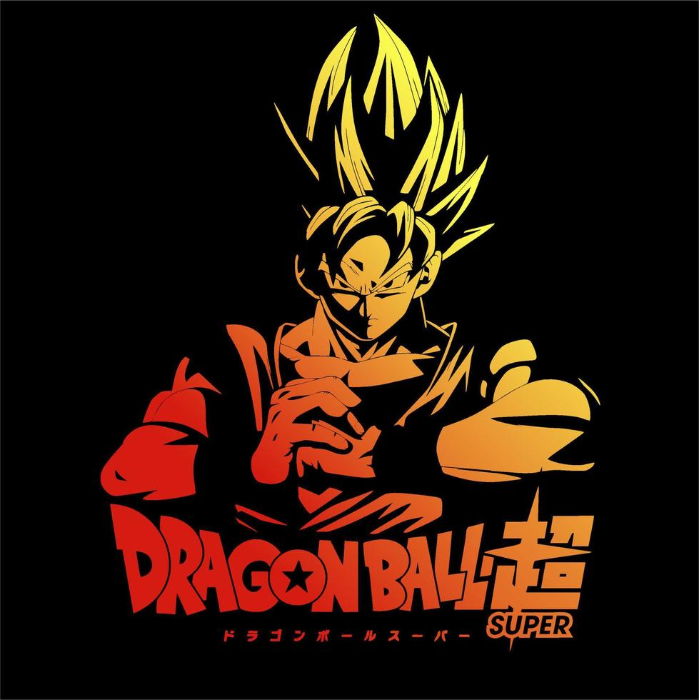

¿Qué es Dragon Ball?
Dragon Ball es una serie de manga creada por Akira Toriyama que se convirtió en una de las franquicias más populares del mundo del anime y el manga. La historia sigue las aventuras de Goku y sus amigos mientras buscan las esferas del dragón para invocar al dragón Shenron y cumplir sus deseos.
Personajes Principales
- Goku
- Vegeta
- Gohan
- Piccolo
- Bulma
Imágenes Destacadas

Enlaces Relacionados
Para más información, visita las siguientes páginas: